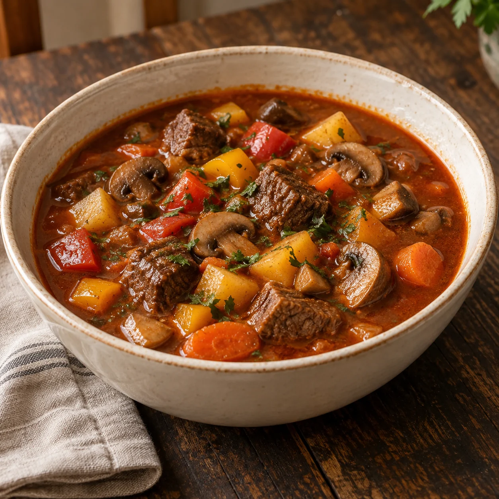

Unsere Klassiker · Suppen
Deftige Gulaschsuppe

Eine kräftige, wärmende Gulaschsuppe mit zart geschmortem Rindfleisch, Kartoffeln, buntem Gemüse und Champignons.
Diese Suppe habe ich 2018 für unseren Gemeindeausflug gekocht – seitdem gehört sie für mich unbedingt in unser Rezeptbuch.
Zutaten
Zubereitung
- Rinderschulter oder Rindernacken in etwa 3 × 3 cm große Würfel schneiden. Zwiebel und Knoblauch fein würfeln. Kartoffeln und Paprika würfeln, die Karotte in Scheiben schneiden. Große Champignons in Scheiben schneiden, kleine Champignons vierteln.
- Das Butterschmalz in einem großen Topf oder Kazan erhitzen. Die Rindfleischwürfel portionsweise etwa 5 Minuten je Durchgang kräftig anbraten und herausnehmen. Zwiebel und Knoblauch anschließend etwa 5 Minuten mitdünsten. Das Fleisch wieder dazugeben.
- Das Fleisch mit Rinderbouillon und Rotwein ablöschen. Salz, Pfeffer, Zucker, beide Sorten Paprikapulver, Lorbeerblätter, Tomatenmark und Majoran dazugeben und gründlich unterrühren.
- Den Deckel auflegen und die Suppe bei kleiner Hitze etwa 60 Minuten sanft schmoren lassen, damit das Fleisch schön zart wird.
- Kartoffeln, Paprika, Champignons und Karotten hinzugeben. Alles weitere etwa 20 Minuten köcheln lassen, bis das Gemüse gar ist. Zum Schluss die Petersilie unterrühren und die Gulaschsuppe heiß servieren.
Hinweise für den Kazan
Die Kazan-Mengen sind vom Grundrezept abgeleitete Richtwerte und noch nicht im Kazan erprobt. Die Literangabe bezeichnet die Topfgröße, nicht die fertige Suppenmenge. Platz zum Rühren lassen und die Bouillon bei Bedarf nach und nach ergänzen.
12-L-Kazan: dreifache Grundmenge für etwa 12 Portionen, mit 1,5 kg Rindfleisch und 2,4 l Bouillon als Ausgangspunkt.
16-L-Kazan: vierfache Grundmenge für etwa 16 Portionen, mit 2 kg Rindfleisch und 3,2 l Bouillon als Ausgangspunkt.
Das Fleisch in mehreren Durchgängen anbraten, damit es bräunt. Bei den großen Mengen zusätzliche Zeit fürs Anbraten und Aufheizen einplanen. Die Schmorzeit beginnt, sobald die Suppe sanft köchelt; das Gemüse erst zugeben, wenn das Fleisch nahezu zart ist.
Bei den Kazan-Varianten zunächst etwa die Hälfte des angegebenen Zuckers und rosenscharfen Paprikapulvers verwenden und später abschmecken. Salz vorsichtig dosieren, da die Bouillon bereits Salz mitbringt.
Alle Kazan-Rezepte →Tipp
Am nächsten Tag schmeckt die Gulaschsuppe oft noch kräftiger, weil sie über Nacht schön durchziehen konnte. Dazu passt frisches Baguette oder ein kräftiges Bauernbrot.